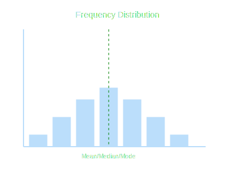

1. Introduction
We study the numerical representation of data. We will focus on three measures of central
tendency: Mean, Mode, and Median of grouped data.

2. Mean of Grouped Data
Direct Method:
x̄ = (Σ fᵢxᵢ) / (Σ fᵢ)
Assumed Mean Method:
x̄ = a + (Σ fᵢdᵢ) / (Σ fᵢ), where dᵢ = xᵢ - a
Step-Deviation Method:
x̄ = a + [(Σ fᵢuᵢ) / (Σ fᵢ)] × h, where uᵢ = (xᵢ - a)/h
3. Mode of Grouped Data
Mode = l + [(f₁ - f₀) / (2f₁ - f₀ - f₂)] × h
Where:
l = lower limit of modal class
f₁ = frequency of modal class
f₀ = frequency of class preceding modal class
f₂ = frequency of class succeeding modal class
h = class size
4. Median of Grouped Data
Median = l + [(n/2 - cf) / f] × h
Where:
l = lower limit of median class
n = number of observations
cf = cumulative frequency of class preceding median class
f = frequency of median class
h = class size
5. Empirical Relationship
3 Median = Mode + 2 Mean